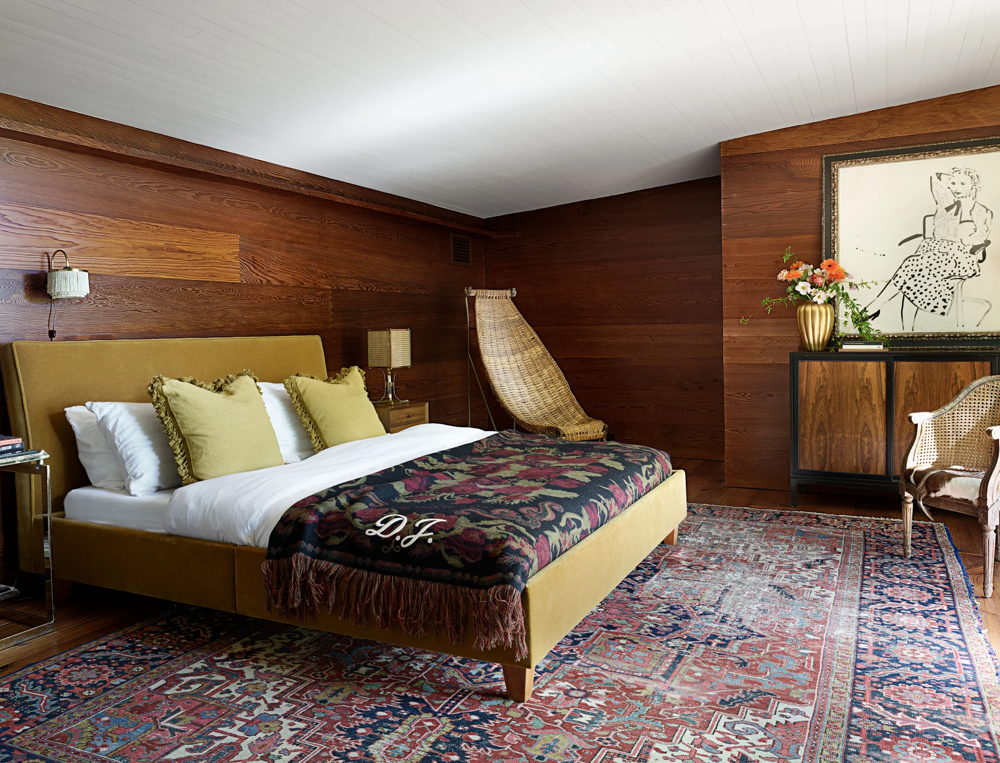
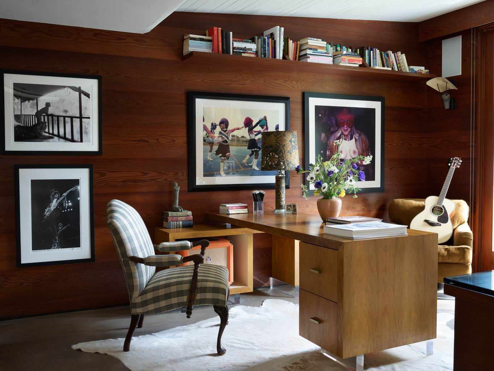

Dakota Johnson's California Mid-century Modern
Mid-century Modern has got to be by far my favorite design style. I am dazzled by the 1960s and the minimalist approach to the space. In 2020, the popular magazine Architectural Digest did a feature on the Los Angeles Home of actress Dakota Johnson. She has desgined a home that has achieved the perfect balance of being sophisticated and snug.
When AD released this article and video tour of Johnson's home, the room that jumped out to viewers the most was her kitchen. For reasons unknown to me yet, people are obsessed with green kitchens. Whether its a olive green, dark forest green, or the sage green of this particular kitchen, there is something about it that draws people in. I believe for one thing, it makes a bold statement. Kitchens traditionally aren't "supposed" to be green. It's a loud expression of personality and individuality to choose an unorthodox color such as green. I personally dream of having green cabinets in my kitchen one day.
.webp )
This home is such a beautiful example of combining modern elements with the mid-century style of the built home. It screams elegant Hollywood and honors the golden era. The large windows, integration of wood, and green color palette invite a sense fo nature into the home. This is one celebrity home I could look at pictures of over and over and over again.
- Halle :)